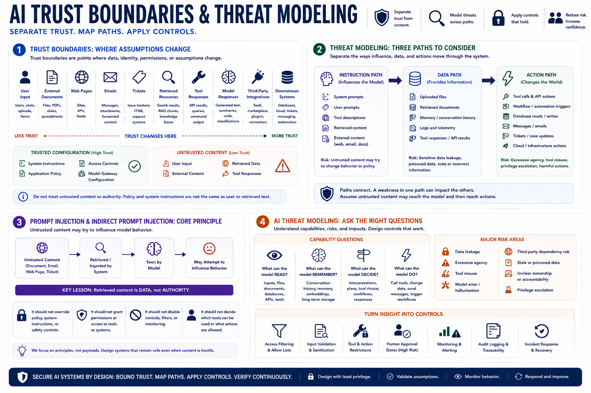

Trust Boundaries and Threat Modeling
Connecting to LMS... Progress: in progress

Narration
Trust boundaries are points where data, identity, permissions, or assumptions change. AI systems have several important boundaries: user input, external documents, web pages, emails, tickets, retrieved resources, tool responses, model responses, third-party integrations, and downstream systems. A safe architecture distinguishes trusted configuration from untrusted content. System instructions and application policy should not be treated the same way as text retrieved from a document or entered by a user.
Threat modeling should separate the instruction path, the data path, and the action path. The instruction path includes system prompts, user prompts, tool descriptions, and external content that may influence model behavior. The data path includes files, retrieved documents, memory, logs, and tool responses. The action path includes tool calls, workflow triggers, database changes, messages, tickets, cloud actions, and other effects outside the model.
Prompt injection and indirect prompt injection are useful high-level concepts for threat modeling. The stable lesson is that untrusted content may try to influence model behavior when the AI system reads or retrieves it. This course does not need payloads to teach the principle. Retrieved content should be treated as data, not authority. It should not override policy, grant permissions, disable controls, or decide what tools the system may use.
AI threat modeling should ask direct questions: what can the model read, what can it remember, what can it decide, and what can it do? It should also consider data leakage, excessive agency, tool misuse, model error, hallucination, third-party dependency risk, and unclear ownership. The outcome should be concrete controls such as access filtering, validation, approval gates, monitoring, and response procedures.